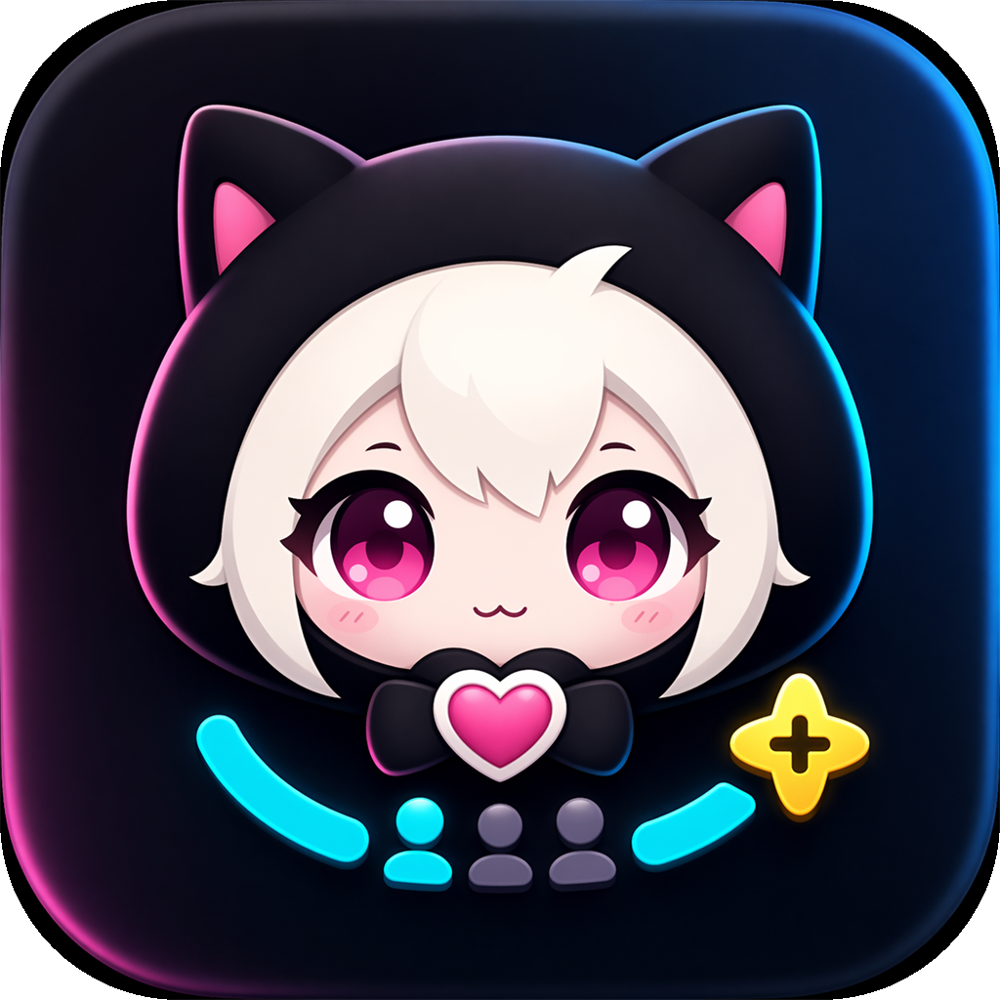

Auto-detect redemptions
EventSub picks up channel-point redemptions in real time. Even without a fixed reward selected, you can catch joins by keyword in the reward title. Refunded redemptions are removed from the queue automatically.
Twitch Sankagata Manager listens to channel-point redemptions in real time, sorts viewers into Playing / Waiting / Trash, and pushes the queue to OBS as a browser-source overlay — all from one native desktop app.

Catch channel-point redemptions, organize the queue, and update the stream overlay without jumping between tools.
EventSub picks up channel-point redemptions in real time. Even without a fixed reward selected, you can catch joins by keyword in the reward title. Refunded redemptions are removed from the queue automatically.
Use different channel-point rewards for first-time viewers and people joining again. You can set only one reward and catch the other side by keywords in the reward name.
Copy the OBS URL and paste it into a Browser Source. The overlay comes up with a transparent background, with no extra server or complicated setup.
Reordering, trashing, and restoring in the app is reflected in the overlay immediately. Because both views read the same queue state, the stream view does not drift.
The desktop app and the OBS browser source share one queue. What you drag, viewers see.
Sign in, choose rewards, set the visible queue, and paste the OBS URL. No server setup or command-line work.
Open the desktop app after install. First launch takes you straight to the Twitch sign-in flow.
Authorize with the device code shown in your browser. No client secret or callback URL setup required.
Choose rewards for first-time viewers and repeat joins. If you only use one reward, the other side can be detected by keywords in the reward name.
Choose max playing slots, waiting rows shown on stream, and whether first-time-today viewers get priority.
Copy the OBS URL into a Browser Source. From there, app changes appear on the overlay immediately.
Plain answers about how the app handles trust, your data, and what's coming.
Recent fixes and improvements are listed here.
Loading…